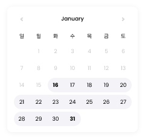
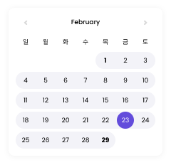

수납설정 튜토리얼 보기
수납설정 튜토리얼 보기
수납설정
청구자료 생성을 위한 수납설정 튜토리얼 입니다.
아래 안내를 확인하시고 등록년월의 수강기간을 설정해 주세요.
기준일로부터 수납주기까지
수강시작일 기준 매월 1개월
예)
반(클래스) 형태 : 월
수강 기간 : 1월16일~2월15일
수강시작일 기준 매월 1개월 청구자료 생성을 선택할 경우 수강 시작일과 종료일을 기준으로 수강기간이 선택됩니다.
청구서 발행일
청구자료 미납 생성에서 월 단위 (7일 전) 선택 시 달력예시의 2월9일에 청구서가 생성됩니다.
수납주기의 첫날
매월 1일~말일 수강기간


예)
반(클래스) 형태 : 월
매월 1일 청구자료를 생성할 경우
① 수강 시작일로부터 해당 월의 말일까지가 수강기간으로 지정됩니다.
② 차월의 경우 수강 시작일은 매월 1일부터 매월 말일까지로 수강기간이 지정됩니다.
청구서 발행일
청구자료 미납 생성에서 월 단위 (7일 전) 선택 시 달력예시의 2월23일에 청구서가 생성됩니다.